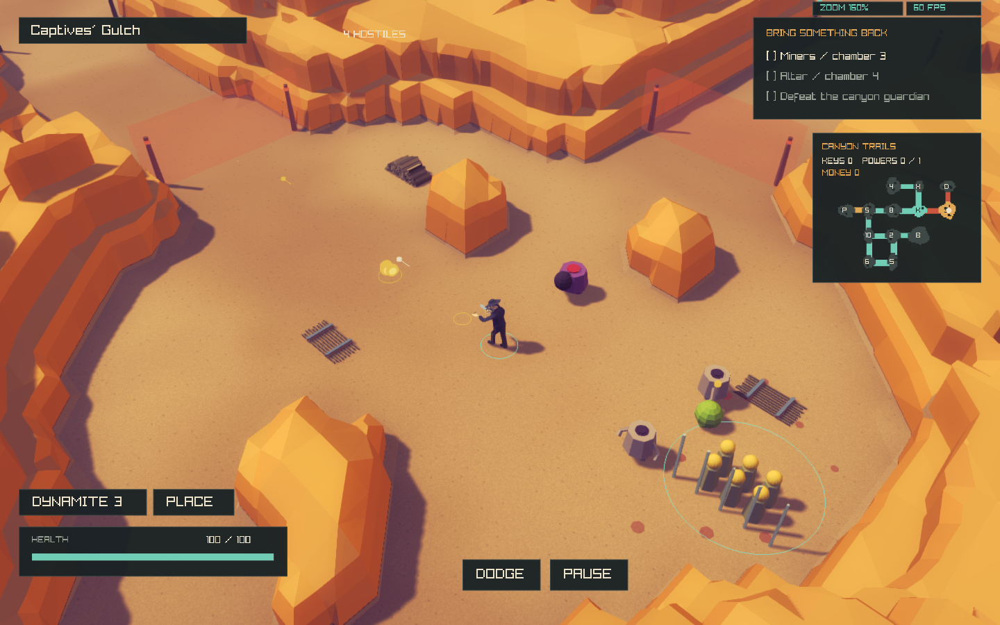
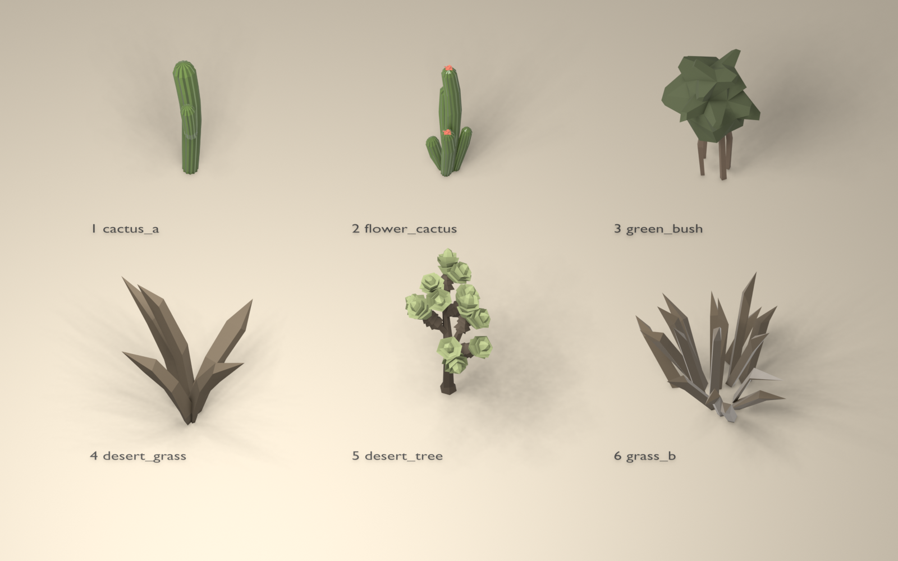
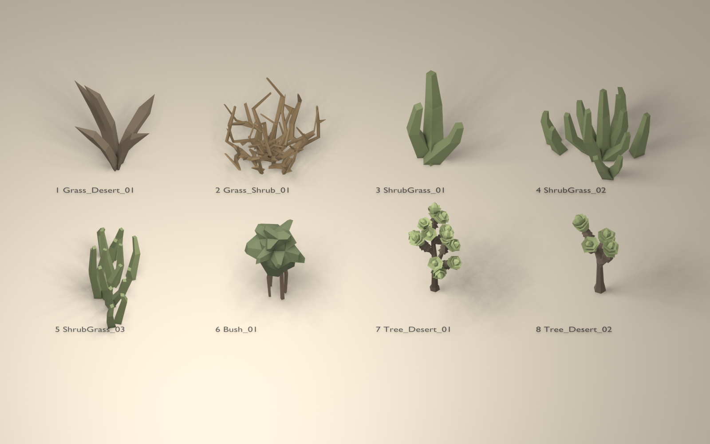
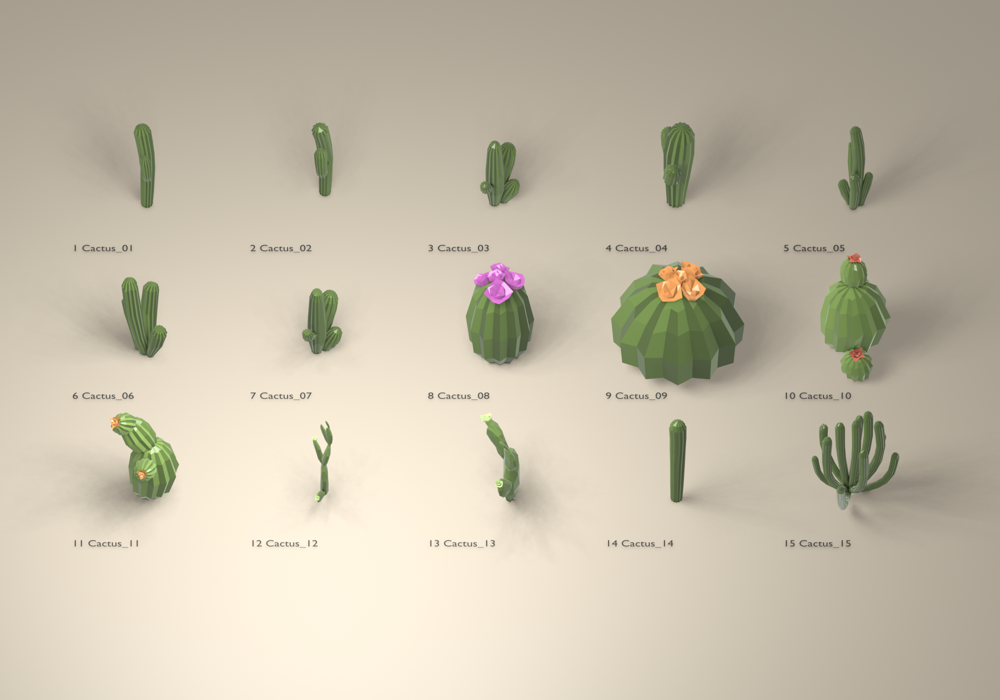

DeathWard · Reference matching pass · November 2026
From continuous terraces
to sandstone formations.
A further visual pass against the supplied concept: shorter geological blocks, low saddles, faceted edges, boulders, warm sandstone and existing native foliage. All game images below are native captures, with no painted-over geometry or post-capture recoloring.
Camera remains at 160% zoom, perspective / 45° FOV. The concept's seed and exact room position are unknown, so this is a visual-characteristic comparison rather than proof of identical scene layout.
Target and current game
Open combat room with sandstone outcrops
Connected trail room
Quiet room and surrounding landscape
Power room: open combat floor and short cliffs
Geometry without decoration
The same Works scene with all decoration densities set to zero. Story/gameplay props remain; cliff geometry is identical to the dressed version.

Before and after, same seeded scenes
Combat
Previous passCurrent pass Works
Previous passCurrent pass What changed
- Geological patches: jittered, seeded cells create individual mesas separated by lower saddles. They limit the terrace profile locally, breaking long upper bands into shorter formations.
- Cliff proportions: lower initial ledges, narrower variable shelves and broader short chamfers. Walls remain steep; caps remain broad and nearly horizontal. Coarse cap planes align to three source cells (3.75 m), so their fine internal triangles shade as larger faces. The canonical floor-contact contour is retained.
- Detached outcrops: cap height follows a restrained part of the original rock's local relief, producing angular boulders rather than uniformly flat-topped pillars.
- Materials: warmer floor and sandstone palettes, coherent cap-facet variation, and a local warm sand-bounce approximation on shadowed cliff faces. The shared lighting system and post-processing are unchanged.
- Dressing: native grass tufts shaded gold, pointed native desert leaves shaded green, leafy bushes, sparse desert trees on supported upper terrain, small rock/gravel clusters and occasional flowering cacti near suitable room edges. Combat centers, roads and sockets stay reserved.
- Flowering cactus: original Western Cactus_05 mesh, with the original red blossom geometry/UVs from Cactus_10 attached at its three tips. The original cactus variants remain available. No replacement texture or generated raster asset. This is a separate FlowerCactus asset; both original cactus models remain unchanged.
- Bounds and readability: exact triangle-to-footprint clipping rejects even thin ledges missed by sample grids; a hard 2,200 cosmetic-instance limit, including gravel members; stable density subsets; tree support tests use roots rather than the overhanging canopy. Picking ignores cosmetic props, while whole-object occlusion still fades obstructing geometry.
Actual native asset previews
The previews use original source texture colors and normalized display scales. In-game grass/agave palettes and actual model sizes are shown in the game captures above.

Foliage library surveyed before selection

All 15 original Western cactus variants

Validation
Geometry checks cover 12 maps, all river categories, repeated seed output, unchanged canonical hashes and collision/trace samples, supported vegetation, clear road shoulders and rollback. Graphics checks cover five seeds and both themes, actual mesh/ray agreement, flat cactus support, density/resource behavior and materials. Occlusion checks exercise whole-object fading, enemy outlines and actual aiming/fire. Four fresh gameplay suites cover roads, rivers, generated floors and room graphs. The earlier full floor-progression run remains in the archived correction report; its gameplay code is unchanged.
{
"maps": "12",
"categories": "4",
"asset_roles": "5",
"candidates": "21661",
"collision_room_checks": "180",
"original_highland_median": "7.55781",
"visual_highland_median": "3.18314",
"original_max": "10.7415",
"visual_max": "6.79616",
"appearance_mean_ms": "241.566"
}Performance observation
One paired stress run using the same final executable and asset pack: 240 frames, seed 1866, 1440 × 900. Original legacy terrain versus this pass. The benchmark maintains hundreds of projectiles and is not ordinary gameplay FPS. One pair is insufficient for a general speedup/slowdown claim; WSL timing varies.
legacy: 113388 terrain/underlay triangles, 105 terrain chunks, 198 visible-density scenery instances.
matched: 296207 terrain/underlay triangles, 105 terrain chunks, 1088 visible-density scenery instances.
Legacy run · Current run · Parsed measurements · Native build
Configuration and reversibility
assets/visual/canyon.cfg controls heights, terrace count/width, variation, dressing densities and budgets. Runtime copy: build/assets/visual/canyon.cfg. Restart after editing. enabled 0 restores the original tall canyon and original dressing path. Seeded room connectivity, collision, enemy AI, projectiles, UI and camera code are unchanged. The enlarged asset library is packaged; normal game builds do not need Blender or the Unity project.
./build/deathward --expedition --theme canyon --style original
# Original terrain and decoration
DEATHWARD_CANYON_CONFIG=assets/visual/canyon-legacy.cfg ./build/deathward
Remaining differences
This pass is substantially closer in surface orientation, silhouette, color and foliage, but is not a pixel-identical reproduction. The concept has an unknown room seed and deliberately arranged individual rocks and plants. Generated boundary sections can still be more regular, and some boulders more angular, than the reference. Original physical rock volumes remain taller than the visible terrain, as required by preserving gameplay collision. WASM checks remain waived.
Changes are in CanyonAppearance.*, CanyonScene.cpp, WesternScene.*, the visual config, the native asset library and its import/bake scripts, and associated tests/documentation. Prior reports are preserved as historical comparisons.
Previous extrusion report · Original slope attempt